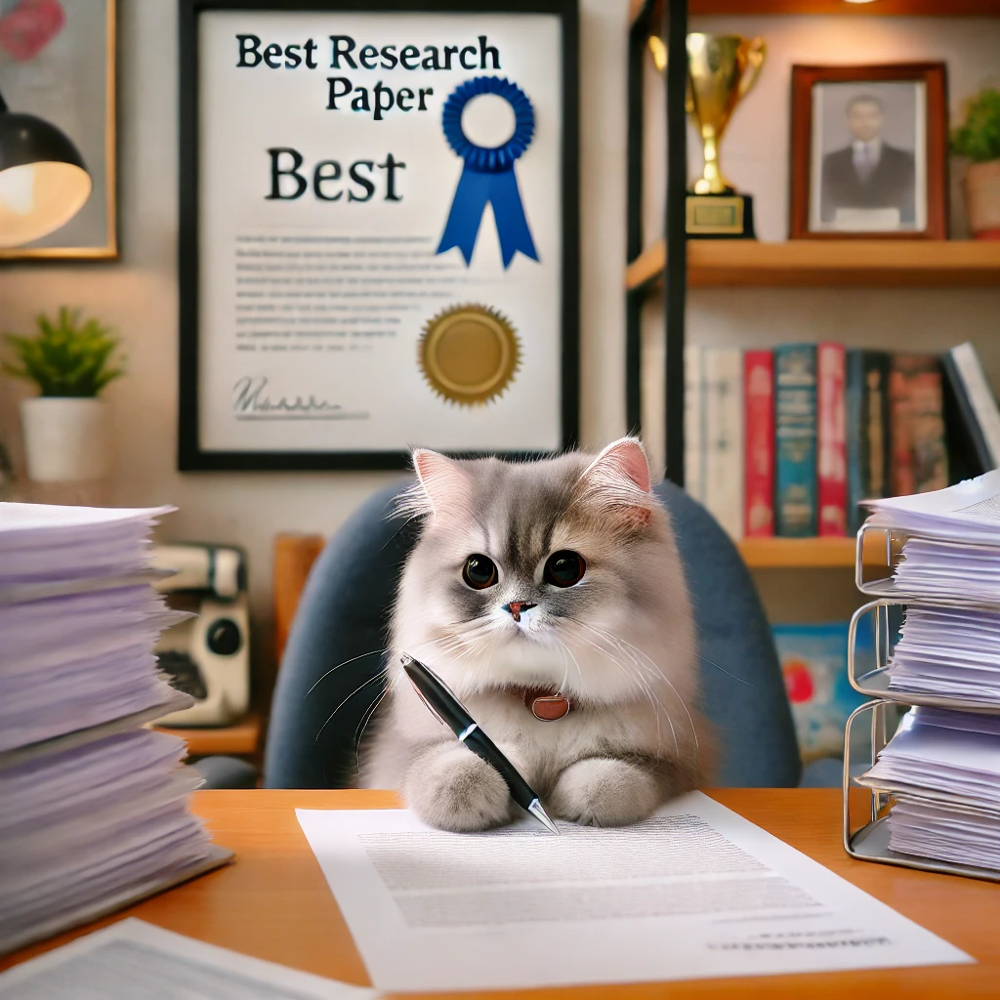

Жила-была кошка по имени Коралл. Но это была не обычная кошка. Коралл была учёной-ихтиологом! Она увлекалась изучением рыб и проводила часы за аквариумами, наблюдая за их поведением. Ее исследования принесли ей множество наград в мире кошачьей науки.
Каждый день Коралл вставала рано утром и отправлялась в свою лабораторию. В этой лаборатории было всё: от аквариумов с редкими рыбами до сложных приборов для исследования воды. Особенно её интересовали коралловые рыбы, ведь их яркие цвета и поведение всегда удивляли и восхищали её. Она посвятила свою жизнь тому, чтобы узнать всё о подводном мире.
Коралл также была автором множества научных статей, одной из которых является статья на Википедии о рыбах. Её работы по исследованию морской флоры и фауны стали настоящим прорывом в ихтиологии, и даже люди-ученые восхищались её открытиями.